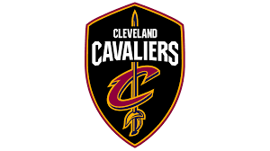

Cleveland Cavaliers (también conocidos como Cavs) (en idioma español: Caballeros de Cleveland) es un equipo profesional de baloncesto de la NBA con sede en Cleveland, Ohio. Disputan sus partidos como local desde 1994 en el Quicken Loans Arena, un estadio con capacidad para 20.562 espectadores. Ganaron su primer título de la NBA en la temporada 2015-16.
James se convirtió rápidamente en una estrella local, ya que jugó al baloncesto en el instituto St. Vincent - St. Mary, en Akron, una localidad cercana a Cleveland. La temporada 2003-04 ofrecía muchas esperanzas, con James convirtiéndose en un jugador dominante, y ganador del premio Rookie del Año por delante de Carmelo Anthony. La 2004-05 aún prometía más. James se colocó definitivamente en la élite de la liga, aumentando sus promedios en puntos, rebotes, asistencias y porcentajes. A pesar de la marcha de Carlos Boozer por circunstancias dudosas, James formó con Ilgauskas y Drew Gooden el corazón del equipo. Tras un principio de temporada prometedor, comenzaron a perder partidos y a descender puestos con cierta rapidez, peligrando incluso los playoffs. Finalmente, con los despidos del entrenador Paul Silas y el general mánager Jim Paxson, el equipo se quedó fuera de la postemporada empatando en el octavo puesto con New Jersey Nets.
El verano de 2005 vio muchos cambios en el equipo de los Cavs. Con nuevo entrenador, Mike Brown, y nuevo general mánager, el exjugador del equipo Danny Ferry, encaraban una temporada que apuntaba ser más exitosa. Larry Hughes, Donyell Marshall y Damon Jones se incorporaron como agentes libres. Todo ello estaba liderado por LeBron James, el considerado sucesor de Michael Jordan. En marzo, los Cavaliers lograron su primera aparición en playoffs desde 1998. Finalizaron cuartos en la Conferencia Este y se enfrentaron en primera ronda contra Washington Wizards. Tras los dos primeros partidos, la serie estaba igualada, pero en el tercer encuentro apareció James a falta de 5.7 segundos para anotar la canasta decisiva. El cuarto partido fue para los Wizards, que empataban de nuevo la eliminatoria. Con la serie de nuevo en Cleveland, los Cavs se llevaron la victoria por 121-120, con una apasionante prórroga en la que James decidió el partido a falta de 0.9 segundos para el final. En el sexto encuentro también se llegó a la prórroga, gracias a un triple final de Gilbert Arenas. Pero en el tiempo suplementario, Damon Jones anotó un tiro en los momentos finales que daba el partido y la eliminatoria a los Cavs. Por primera vez en 13 años, avanzaban a las Semifinales de Conferencia.
En segunda ronda, ante Detroit Pistons, los Cavs perdían los dos primeros partidos, pero, de manera increíble, daban la vuelta a la eliminatoria ganando los tres siguientes, incluido uno en el Palace of Auburn Hills. Sin embargo, perdieron el sexto encuentro en casa y en el séptimo y definitivo, los Pistons sentenciaron por 79-61. En la temporada 2006-07, la franquicia hizo historia clasificándose por primera vez a unas Finales de la NBA. En Finales de Conferencia eliminaron a los Pistons en seis partidos, vengándose de la derrota del año anterior, con un James estelar. Ya en las Finales, unos Spurs liderados por el base francés Tony Parker (MVP de las Finales) finalizaron el sueño de los Cavs barriéndoles fácilmente por 4-0. En la temporada 2007-08, los Cavaliers han sido el tercer mejor equipo del Este, con 45 victorias y 37 derrotas, y han sido eliminados en el séptimo partido de la semifinal de Conferencia, por los Boston Celtics, por 4 victorias a 3.
En la temporada, la 2015-16, terminaron con un récord de 57-25 y en la primera posición de la Conferencia Este. En los playoffs, se enfrentaron a los Detroit Pistons y a los Atlanta Hawks, resultando ambos encuentros en un 4-0 favorable a los de Ohio. En las finales de conferencia ganaron 4-2 a los peligrosos Toronto Raptors de DeRozan, Lowry y Ross; y, en las Finales, se enfrentaron a Golden State Warriors, en una serie muy igualada que tuvo que resolverse en el séptimo partido, proclamándose finalmente Cleveland Cavaliers como campeones de la NBA, lo que supuso el primer título para la franquicia. Entre los logros de dicha serie, cabe destacar que remontaron un 3-1 favorable a los Warriors, siendo el primer equipo en la historia de la NBA en conseguirlo en unas Finales,3 y que LeBron James y Kyrie Irving batieron un récord de anotación en el quinto encuentro, el que supuso el 3-2 y el inicio de la remontada de los Cavaliers, al llegar a los 41 puntos cada uno de ellos en el mismo partido.
 Indice
Indice